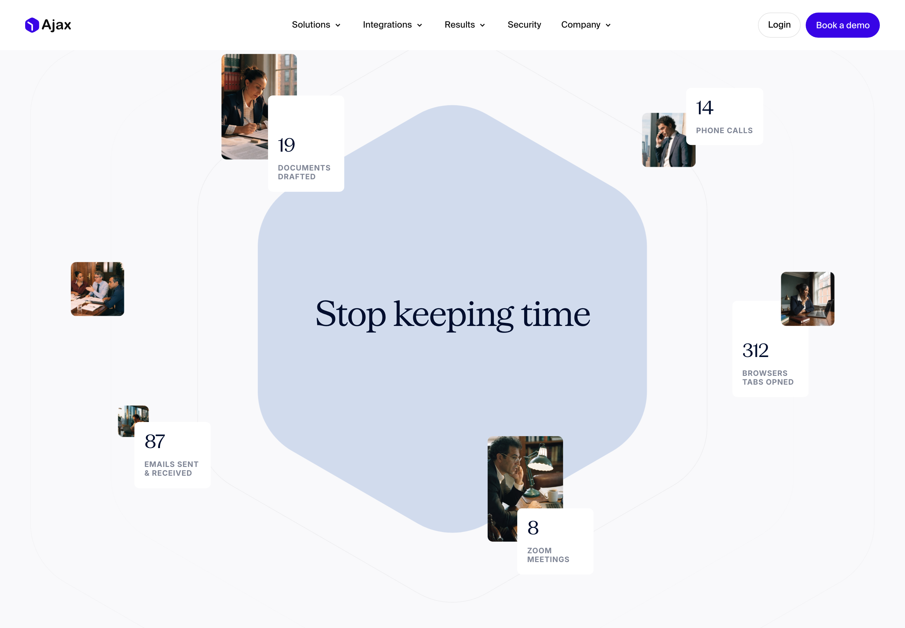
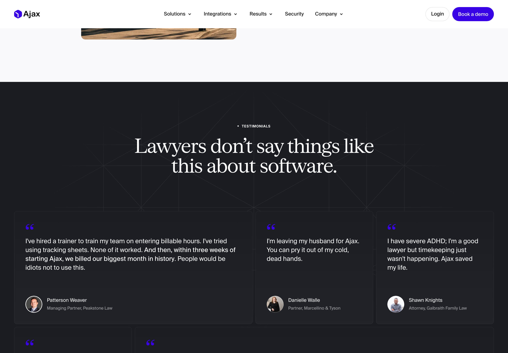
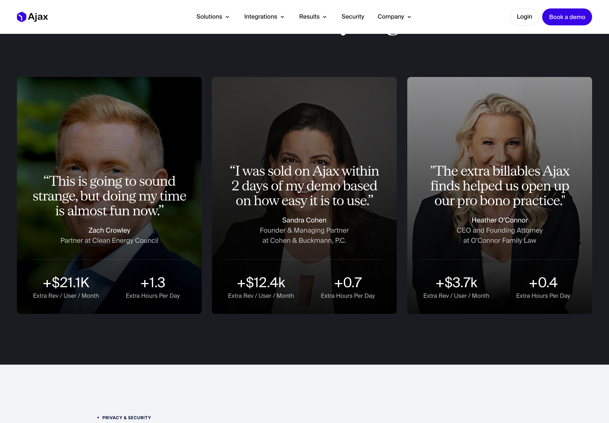
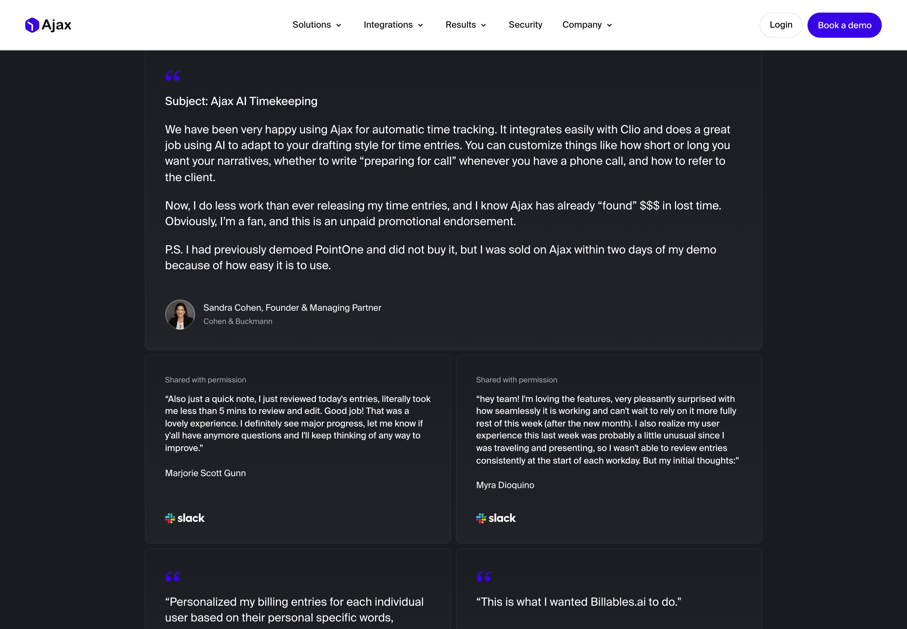
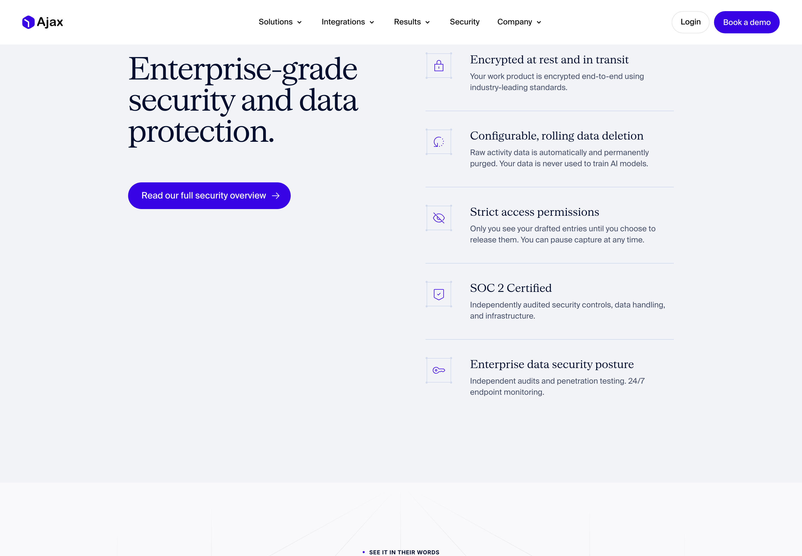
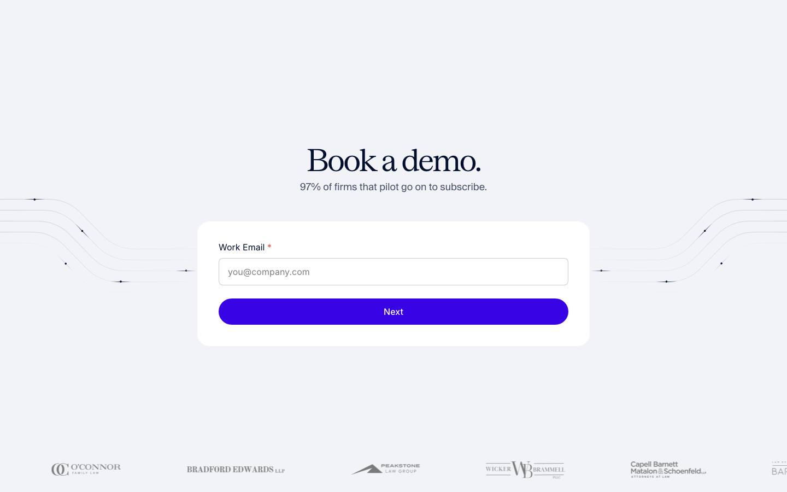
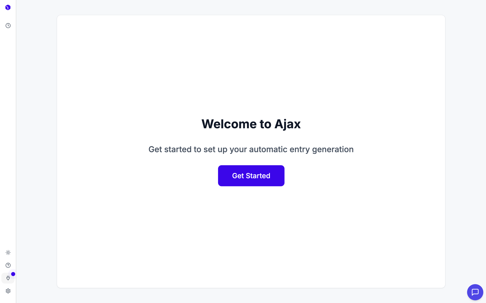
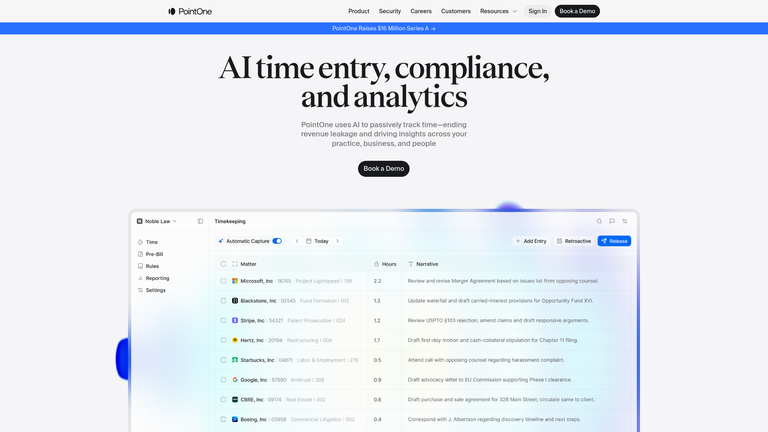
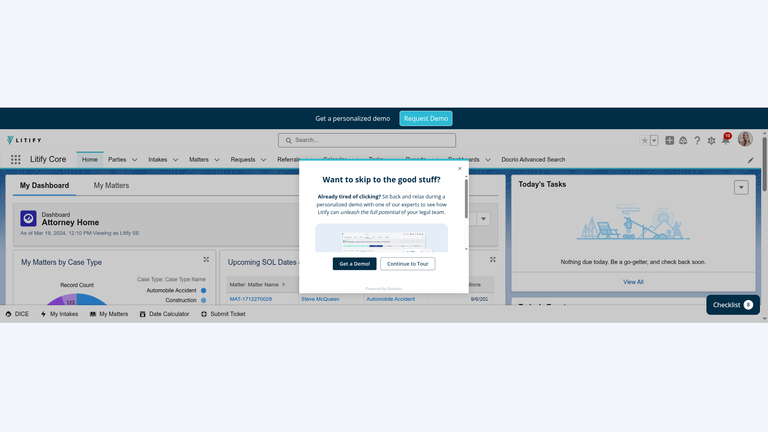

Design Audit — joinajax.com
Ajax · AI Timekeeper for Lawyers · audited 2026-06-29 · 14 public page types + mobile + logged-in product · headed-Chrome capture (Playwright). Templated families (≈17 case studies, ≈30 blog posts) sampled by index + representative. In-product captured from a live authenticated session, read-only.
The marketing site is top-1% legal SaaS — editorial, confident, and built on the best social proof in the category. The product is functional and thoughtful but visibly under-branded next to it.
The biggest opportunity isn't the website — it's closing the craft gap between marketing and app, where the elegant serif brand collapses into a generic sans dashboard. Secondary: the pilot→subscribe stat is quoted as 90% / 95% / 97% across three pages.
Grade — Marketing A / A‑ · Product B‑The big picture
Ajax sells to the hardest B2B audience there is — skeptical, traditional, time-poor lawyers — and the site is engineered for exactly that buyer: an editorial serif identity that signals authority where most legal-tech looks like a 2014 dashboard; a four-layer social-proof stack (hero quote → text masonry → quantified results → video) that's unusually deep and unusually real; and an objection-first IA that meets privacy, adoption, billing-fit and "what about my personal activity" head-on.
Then you log in, and Linear-for-lawyers becomes a competent-but-ordinary internal tool: bold sans headings, a bare "Welcome to Ajax / Get Started" empty state, an icon-only sidebar, a danger-red column for a benign "not connected" state. Nothing is broken — but the site's promise is about feel, and feel is where the product trails. That gap is the headline.
What's working keep
1 · The headline typography is the brand

Why it works: the serif + italic is sophisticated and category-defiant, and the hero shows the output (a drafted, narrated, priced entry) rather than just describing it. You get the product in one glance. Keep the serif as the brand's load-bearing asset.
2 · Copywriting does the selling
Paired, memorable, benefit-led: "Stop keeping time." → "Start finding it." is the best line on the site; "Everything that keeps you from practicing law, handled." frames Ajax as removing everything that isn't lawyering; "Stop losing time you already worked." is clean loss-aversion.

3 · Social proof is the moat — and it's real


The case-studies index surfaces the strongest signal on the site: "14 customers liked Ajax so much, they angel invested." Customers wiring you money is the highest-credibility endorsement there is. Don't bury it.
4 · The competitors page lets customers do the takedown

Why it works: "18 comparisons, 18 firms chose Ajax" and a sports-style 18‑0 record is confident without being defensive, and routing the knock through customer voices beats a vendor-built feature table. The differentiation is crisp too: competitors read metadata via APIs (subject lines, file names); Ajax reads actual content via a desktop app.
5 · Security is a first-class citizen

A tool that watches everything triggers an instant privacy fear in a confidentiality-bound profession. Ajax answers it before you object — down to the FAQ's "What if I work on personal stuff during the day?" — and repeats the privacy highlights inside the product's Help page. Correct instinct, well executed.
6 · The demo form removes friction

What's not working fix
1 · The product doesn't look like the brand — highest impact

Why it's a problem: the funnel promised a premium, considered experience; the first authenticated screen has to pay that off — it's where trust converts to habit. Three tells: type mismatch (serif marketing vs generic sans product — the brand's strongest asset missing where retention is decided); bare empty states (no preview of what "automatic entry generation" looks like, no steps, no momentum); icon-only sidebar (four destinations, no labels — your named competitor labels theirs).
2 · The review board over-signals alarm
The core in-product surface is a three-column board (To Review → Clio → Rejected) that mirrors the marketing's Capture→Review→Release story. Strong concept — but the unconnected Clio column wears a red/danger border, the same language as an error. (Live-account screenshot omitted from this shared version for privacy; the equivalent competitor layout is shown further down.)
Why it's a problem: red = something's wrong; "you haven't connected Clio yet" is a setup step, not a failure. Use neutral/dashed or amber for setup and reserve red for real errors. Also: card density is heavy (matter + code + hours + narrative + truncated source chips + timeline per card) — great for provenance, hard to scan in volume, so offer a table mode; and "Spam" as a billing class is odd nomenclature for legal — "Non-billable" / "Discard" reads cleaner.
3 · The polished part proves the gap is fixable
The Settings screen — two-pane layout, grouped sections, "Inherit firm default" badges (firm-vs-user policy hierarchy, genuinely sophisticated for legal), helper text phrased as plain questions — is the best-designed in-product surface. (Screenshot omitted here for privacy.)
The craft exists — it just hasn't been applied evenly across the board, empty states, and nav. This is a distribution problem, not a capability problem.
4 · One stat, three numbers
| Page | Claim |
|---|---|
| Landing hero | "Well over 90% of firms that pilot subscribe" |
| Landing stats bar | "95% of firms that pilot subscribe" |
| Competitors hero | "95% pilot-to-paid conversion" |
| Book-a-demo | "97% of firms that pilot go on to subscribe" |
To a detail-oriented lawyer, three numbers for one metric reads as loose with the truth — the opposite of an evidence-heavy strategy. Pick one (95% appears most), use it everywhere, and footnote the boldest ROI claims ("11 days to pay for itself," "+$21.1K/user/mo") with one line of methodology.
5 · Minor marketing notes
- Back-half length — ~13,500px landing with four testimonial treatments; the bottom third repeats. Tighten ~20% or gate the deepest proof behind "see more."
- Thin footer — no Trust Center, status, or social. For an enterprise security story, a visible Trust Center link belongs there.
- No pricing anywhere — fully demo-led (right for mid-market/enterprise) but adds friction for solo/small firms; a "how pricing works" note would catch self-qualifiers.
- Stock gavel/scales in the final CTA is more cliché than the original lawyer-at-desk photography.
How the named competitor handles the same surface


Takeaway: Ajax wins on marketing decisively, and its provenance-rich card (the source activity behind each entry) is a real advantage PointOne's flat table lacks. But on two basics — labeled navigation and guided first-run — the competitor is ahead. Both are cheap to match and directly move adoption, the metric Ajax sells on.
Prioritized recommendations
- Port the brand into the product (highest leverage). Serif in product headings/empty states/onboarding, warm the neutral grays toward the site palette, add the flow-line motif as quiet texture. Same front door.
- Turn "Welcome to Ajax" into a real first-run — 3–4 guided steps + progress, and preview the payoff (a sample captured day) before any data exists:
┌───────────────────────────────────────────────┐ │ Welcome to Ajax — let's capture your day │ ← serif │ ●──────●──────○──────○ │ ← progress │ 1 Install 2 Connect 3 Billing 4 Review │ │ desktop Clio codes your 1st day │ │ ┌── Preview: a day Ajax captured ──────────┐ │ │ │ 2.8 Meridian — M&A Conference call… │ │ ← show value │ │ 3.2 Hargrove v.DuPont Reviewed depo… │ │ before empty │ └──────────────────────────────────────────┘ │ │ [ Connect your billing system → ] │ └───────────────────────────────────────────────┘
- Fix the board's color semantics + add a table mode. Neutral/amber "setup" for unconnected billing (not red); compact table view for high-volume reviewers alongside the rich card view.
To Review · 5 Clio (not connected) Rejected ┌──────────────────────┐ ┌─ ─ ─ ─ ─ ─ ─ ─ ─ ─┐ ┌──────────┐ │ 0.2 Meridian — M&A │ │ ⚲ Connect Clio to │ │ empty │ │ Conference call… │ │ route entries │ │ │ │ ▸ source · timeline │ │ [ Connect → ] │ │ │ └──────────────────────┘ └─ ─ amber/dashed ─ ─┘ └──────────┘ [ ⊞ Cards · ▤ Table ] ← density toggle
- Label the sidebar (or hover/expandable rail) — match the discoverability bar the competitor clears.
- Standardize the pilot→subscribe stat to one number sitewide; footnote the boldest ROI claims.
- Tighten the landing's back third (~20%) and add a footer Trust Center link.
Method & notes
- Public site — 14 unique page types at 1440px (fold + full-page, scroll-triggered for Framer lazy sections) + mobile landing at 390px. Templated families sampled via index + representative.
- In-product — live authenticated session (
app.joinajax.com):/dashboard/timesheets,/integrations,/settings,/help, read-only at 2×. Auth: PropelAuth. Account data is the owner's own dogfooding — critique is UX-only. - References — PointOne, Litify via Lazyweb (a Delinea result was dropped: its image didn't match its description).
Screenshots of the live in-product account were intentionally omitted from this shared version for privacy; the in-product critique is unchanged. Marketing-page screenshots are shown as captured from the public site.